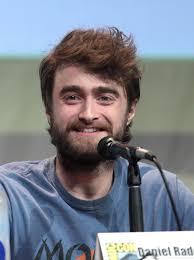

(born 23 July 1989)[1] is an English actor best known for his role as Harry Potter in the film series of the same name. He made his acting debut at 10 years of age in BBC One's 1999 television film David Copperfield, followed by his cinematic debut in 2001's The Tailor of Panama. At age 11, he was cast as Harry Potter in the first Harry Potter film, and starred in the series for 10 years until the release of the eighth and final film in 2011. Radcliffe began to branch out to stage acting in 2007, starring in the London and New York productions of Equus, and in the 2011 Broadway revival of the musical How to Succeed in Business Without Really Trying. His recent films include the horror film The Woman in Black (2012), playing beat poet Allen Ginsberg in the independent film Kill Your Darlings (2013), science fiction fantasy Victor Frankenstein (2015) and comedy-drama Swiss Army Man, heist thriller film Now You See Me 2 and thriller Imperium (all 2016). He has contributed to many charities, including Demelza Hospice Care for Children, and The Trevor Project for suicide prevention among LGBTQ youth, which gave him its Hero Award in 2011.

(born 15 April 1990)[4] is a British actress, model, and activist. Born in Paris and brought up in Oxfordshire, Watson attended the Dragon School and trained as an actress at the Oxford branch of Stagecoach Theatre Arts. She rose to prominence after landing her first professional acting role as Hermione Granger in the Harry Potter film series, having acted only in school plays previously.[5] Watson appeared in all eight Harry Potter films from 2001 to 2011, earning worldwide fame, critical accolades, and around $60 million.[6] Watson continued to work outside of the Harry Potter films, appearing in the 2007 television adaptation of the novel Ballet Shoes and lending her voice to The Tale of Despereaux (2008). Following the last Harry Potter film, she took on starring and supporting roles in My Week with Marilyn (2011), The Perks of Being a Wallflower (2012) and The Bling Ring (2013), made an appearance as an exaggerated version of herself in This Is the End (2013),[7] and portrayed the title character's adopted daughter in Noah (2014).[8] In 2017, she starred as Belle in a live-action adaptation of the musical romantic fantasy film Beauty and the Beast. Her other roles include Regression (2015), Colonia (2015) and The Circle (2017). From 2011 to 2014, Watson split her time between working on film projects and continuing her education, studying at Brown University and Worcester College, Oxford and graduating from Brown with a bachelor's degree in English literature in May 2014.[9] Her modelling work has included campaigns for Burberry and Lancôme.[10][11] As a fashion consultant, she helped create a line of clothing for People Tree.[12] She was honoured by the British Academy of Film and Television Arts in 2014, winning for British Artist of the Year.[13] That same year, she was appointed as a UN Women Goodwill ambassador and helped launch the UN Women campaign HeForShe, which calls for men to advocate gender equality.